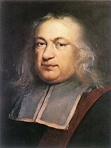
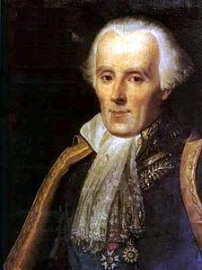
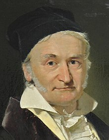
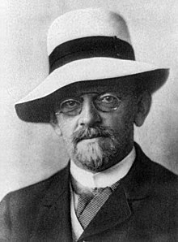

Ritratti
-
Cronologiaaaaa
-
Wikipedia
-
Video
Pierre de Fermat
Isaac Newton
Gottfried Wilhelm von Leibniz
Pierre Simone Laplace
Karl Friederich Gauss
David Hilbert




Pierre de Fermat
Isaac Newton
Gottfried Wilhelm von Leibniz
Pierre Simone Laplace
Karl Friederich Gauss
David Hilbert
Cronologia
Eventi principali del 17-esimo secolo
Eventi principali del 18-esimo secolo
Eventi principali del 19-esimo secolo
Eventi principali del 20-esimo secolo
Video
Il teorema di Fermat
La gravità secondo Newton
Il mondo secondo Leibniz
L'ipotesi di Riemann